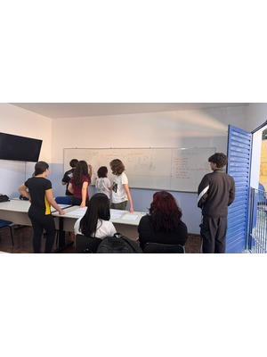
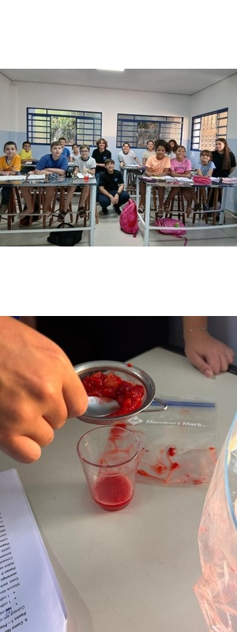
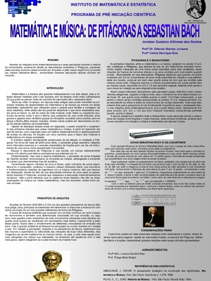
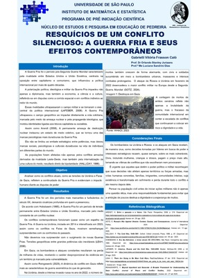
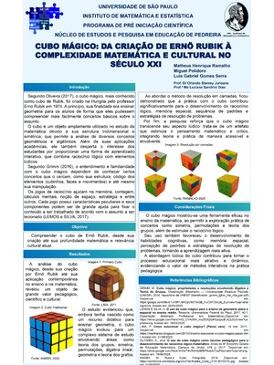
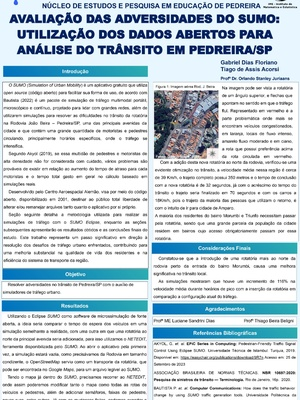

Pré - IC
Dinâmica: Pensando Juntos! Na Pré-Iniciação Científica, aprender também é trabalhar em equipe! Nesta dinâmica, os alunos foram desafiados a resolver um problema coletivo, organizando estratégias, distribuindo funções e assumindo responsabilidades. A atividade estimulou o raciocínio lógico, a comunicação, a cooperação, a liderança e a tomada de decisões. Afinal, fazer ciência também é compartilhar ideias, enfrentar desafios e construir soluções em conjunto.

Pré IC: compartilhando conhecimento - aula prática: extração do DNA do morango. Aprender ciência também é ter a oportunidade de ensinar. Nesta atividade, os alunos da Pré IC assumiram o papel de educadores e ministraram uma aula para os estudantes do Morvan, explorando, de forma prática e experimental, a extração do DNA do morango. A experiência proporcionou uma troca de conhecimentos, estimulando a comunicação, o protagonismo juvenil, a responsabilidade e a capacidade de aprendizagem acessível e significativa. Fazer ciência também é compartilhar descobertas, despertar a curiosidade e inspirar outros estudantes pelo conhecimento.

A produção dos banners pelos estudantes do Programa de Pré-Iniciação Científica constitiu uma estapa de sistemização e comunicação dos conhecimentos construídos ao longo das pesquisas. Esse percurso envolveu a delimitação dos temas, a definição dos objetivos, a consulta a referências bibliográficas e a análise dos conteúdos investigados. Na pesquisa de matemática e música, o estudo bibliográfico possibilitou explorar relações entre proporções, interavalos e escalas musicais em uma perspectiva histórica.

No trabalho sobre a Guerra Fria, as referências fundamentam a discussão de possíveis relações entre as disputas daquele período e os conflitos contemporâneos, considerando suas repercussões sociais e humanas.

Nos projetos sobre o cubo mágico e a mobilidade urbana, o estudo teórico esteve associado à exploração de procedimentos práticos e tecnológicos. A investigação sobre o cubo mágico abordou sua origem, suas propriedades matemáticas e o método de resolução por camadas, relacionando esses elementos ao raciocínio lógico, à percepção espacial e às estratégias de resolução de problemas.

No estudo sobre o trânsito em Pedreira/SP, os estudantes utilizaram sados cartográficos e as ferramentas SUMO e NETEDIT para representar a configuração viária e comparar cenários de circulação, examinando os possíveis efeitos da inclusão de uma nova rotatória no ambiente de simulação.

Sua elaboração mobilizou práticas de leitura acadêmica, análise, interpretação e escrita, além do uso de recursos específicos de cada área. A experiência proporcionou uma aproximação com a produção científica, permitindo aos alunos assumir a autoria da apresentação de seus estudos e exercitar a comunicação fundamentada do conhecimento.